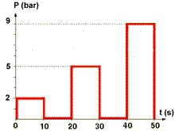

This function is used to check that the modulators work correctly and that the lines and pipe installations are trouble-free.
The test takes approx. one minute and cannot be cancelled while in progress.
The pressure should match the pressure curve in the figure, and pressure change should take place during 1 second. If time is longer, clogged breather or damaged lines can be suspected.
Test conditions:
Parking brake released.
The wheels should be blocked on the axle that is not raised.
Engine speed 1,000 rpm or constant air supply to the air system.
Access to pressure gauge according to version below.
Procedure:
Connect a pressure gauge graded to at least 12 bar to the pressure check connection on the modulator, then select modulator for the wheel to be tested.
A dialogue shows the test conditions, check these.
The test is activated, read off the pressure on the gauge and check that it matches the pressure curve in the figure below.
The function is done.

If the function fails, check the test conditions and repair any faults.